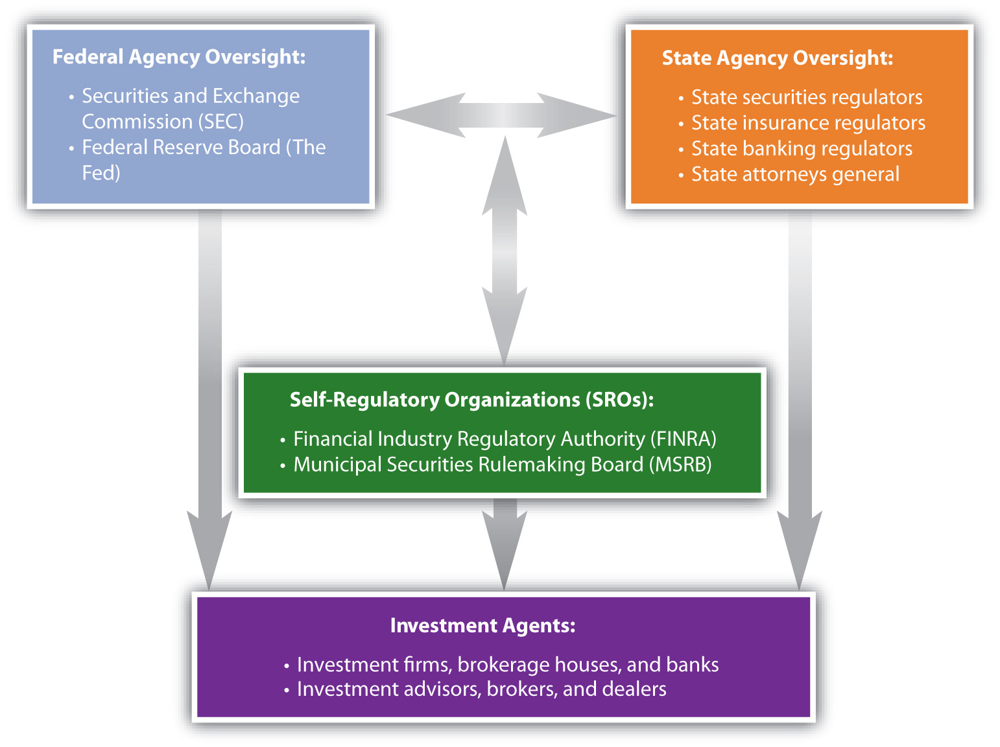

Financial markets, perhaps more than most, seem to seduce otherwise good citizens into unethical or even illegal behavior. There are several reasons:
To counteract these realities there are three forces at work: market forces, professional standards, and legal restrictions. But before these topics are discussed, it is useful to review the differences between ethical and unethical, or professional and unprofessional, behaviors in this context.
Investment intermediaries or agents such as advisors, brokers, and dealers have responsibilities to their clients, their employers, and to the markets. In carrying out these responsibilities, they should demonstrate appropriate professional conduct. Professional conduct is ethical, that is, it is based on moral principles of right and wrong as expressed in the profession’s standards of conduct.
Brokers and advisors should always deal objectively and fairly with clients, putting clients’ interests before their own. In other words, a broker should always give higher priority to the client’s wealth than to his or her own. When acting on a client’s behalf, a broker should always be aware of the trust that has been placed on him or her and act with prudenceActing with sound and responsible judgment; in investing, prudence implies a relative conservatism regarding risk. and care. The principle of due diligenceCompetent and adequate research into an investment proposal to be able to project its returns and its potential risks. stipulates, for example, that investment advisors and brokers must investigate and report to the investor every detail of a potential investment.
Kim receives an order from a client to sell shares because the client believes the stock price will drop. Kim believes the client is right and so decides to sell her own personal shares in that stock as well. She places the order to sell her shares first, so that if the price drops as she sells, her shares will be sold at a higher price. She places the order to sell the client’s shares after the price has dropped. This practice of taking advantage of the client by not putting the client first is called front-runningAn agent trading for its own account before executing trading orders for its clients.. According to professional ethics, Kim should be putting her client’s interest—and order—ahead of her own.
Professional ethics call for brokers and advisors to disclose any potential conflicts of interest they may have. They also should be diligent and thorough when researching investments and making recommendations and should have an objective basis for their advice. Investment recommendations should be suitable for the client, and advice should be given with the best interests of the client in mind.
Shonte is a financial advisor for a large broker-dealer that has acquired a large position in a certain bond issue. It now owns a lot of bonds. Wanting to reduce the company’s exposure to risk from that position, Shonte’s boss suggests that whenever possible, she should advise her clients to add this bond to their portfolios. That way the company can use its clients to buy its bonds and reduce its position. This conduct is unethical, however. Shonte should not automatically recommend the bond to all her clients, because her advice should be based solely on the individual clients’ interests and needs, not the company’s.
An advisor or broker should
In addition to being loyal to clients, brokers and advisors are expected to be loyal to employers, the professions, and the financial markets. Accepting side deals, gifts, or “kickbacks,” for example, may damage a company’s reputation, harm colleagues as well as clients, and betray the profession. Loyalty to market integrity is shown by keeping the markets competitive and fair. For example, brokers should use only information available to all. Information from private sources to which others do not have access is inside informationInformation that is not publicly available that has a material effect on an investment’s value., and making trades on the basis of inside information is called insider tradingThe illegal practice of trading securities based on nonpublic or “inside” information..
For example, Jorge, a broker, just found out from a client that the company she works for is about to be granted a patent for a new product. The information has not yet been announced publicly, but it will almost certainly increase the value of the company’s stock. Jorge is tempted to buy the stock immediately, before the news breaks, both for his employer’s account and his own. He would almost surely profit and gain points with his boss as well. But that would be wrong. Trading on inside information would be disloyal to the integrity of the markets, and it is illegal.
Brokers and advisors should not manipulate markets or try to influence or distort prices to mislead market participants. Attempts to do so have become more widespread with the tremendous growth of electronic communications. For example, Tom, a dealer, has just shorted a large position in a tech stock. On his widely read blog, he announces that his “research” has revealed serious weaknesses in the tech company’s marketing strategy and rumors of competitors’ greater advantages in the market. Tom has no factual basis for his reporting, but if his “news” causes the price of the tech stock to fall, he will profit from his short position. Tom’s attempts to manipulate the market are unethical and unprofessional.
It is often said that the financial markets are self-regulating and self-policing. Market forces may be effective in correcting or preventing unprofessional conduct, but they often don’t, so there are also professional and legal sanctions.
Sanctions provide deterrence and punishment. Registered brokers and advisors, and their firms, typically are members of professional organizations with regulatory powers. For example, professional organizations have qualifications for membership and may award credentials or accreditation that their members would not want to lose.
There are many professional designations and accreditations in the investment advising and brokerage fields (Chapter 1 "Personal Financial Planning"). However, keep in mind that no professional affiliation or designation is required to give investment advice.
The U.S. securities industry is formally regulated by federal and state governments. Government sanctions and limits have been imposed gradually, usually after a major market failure or scandal, and so form a collection of rules and laws overseen by a variety of agencies.
The Securities and Exchange Commission (SEC) is a federal government agency empowered to oversee the trading of securities and the exchanges in the capital markets. It was created in 1934 in response to the behavior that precipitated the stock market crash in 1929 and the subsequent failure of the banking system. The SEC investigates illegal activities such as trading on insider information, front-running, fraud, and market manipulation.
The SEC also requires information disclosures to inform the public about companies’ financial performance and business strategy. Investors must report to the SEC their intention to acquire more than 5 percent of a company’s shares, and business executives must report to the SEC when they buy or sell shares in their own company. The SEC then tries to minimize the use of insider information by making it publicly available.
The SEC delegates authority to self-regulatory organizations (SROs)A nongovernmental organization that regulates a profession or industry., such as the National Association of Securities Dealers (NASD), and the national stock exchanges, such as the New York Stock Exchange (NYSE). NASD and the exchanges uphold industry standards and compliance requirements for trading securities and operating brokerages.
In 2007, the SEC created a new SRO that reincorporated the NASD, renamed as the Financial Industry Regulatory Authority (FINRA). FINRA’s job is to focus exclusively on the enforcement of rules governing the securities industry. In addition, Congress created the Municipal Securities Rulemaking Board (MSRB) as an SRO. The MSRB’s job is to create rules to protect investors involved with broker-dealers and banks that trade in tax-exempt bonds and 529 college savings plans.
Figure 14.6 "Regulatory Environment of the U.S. Securities Industry" shows the structure of the securities industry’s regulatory environment.
Figure 14.6 Regulatory Environment of the U.S. Securities Industry
The Federal Reserve regulates banks and the banking system. When investment brokering and advising are services of investment or commercial banks, their actions may fall under the control of both the SEC and the Fed, as well as state banking and insurance regulators. States license investment agents. Also, each state’s attorney general is responsible for investigating securities violations in that state.
Government regulation of capital markets has long been a contentious issue in the United States. During periods of expansion and rising asset prices, there is less call for regulation and enforcement. Clients and investment agents may have fewer complaints because of investment gains and increasing earnings. When a bubble bursts or there is a true financial crisis, however, then investors demand protections and enforcement.
For example, after the stock market crash in 1929 and the widespread bank failures of 1930–1933, the Glass-Steagall Act was passed in 1933 to establish the Federal Deposit Insurance Corporation (FDIC) and take measures to reduce market speculation. A second Glass-Steagall Act, which was passed the same year and officially named the Banking Act of 1933, separated investment and commercial banking to reduce potential conflicts of interest when a bank is issuing securities for a firm that it is also lending to. In 1999, however, after years of economic expansion and at the height of the tech stock bubble, the Gramm-Leach-Bliley Act effectively repealed the Banking Act of 1933, opening the way for the consolidation of the banking industry. This consolidation led to the introduction of “one-stop-shopping” banks, which provide investment, commercial, and retail banking services all under one roof.
The financial and banking crisis that began in 2007 led to calls for increased regulation and a larger role for the federal and state governments in regulating the banking and securities industries. While history shows that the kinds of regulation and amount of government oversight vary, there clearly will always be a role for federal and state government regulators.
As an investor, you have recourse if a broker or advisor has been unethical, unprofessional, or criminal in his or her conduct. If the offending agent is working for a brokerage firm or bank, a complaint to a superior is sometimes all that is needed. The firm would prefer not to risk its reputation for one “bad apple.”
If you are not satisfied, however, you can lodge a formal complaint with a professional organization such as the relevant SRO. The SROs have standard procedures in place and will investigate your complaint. If necessary, the offender will be punished by a suspension or permanent removal of his or her professional designation or certification.
You can also complain to the SEC or a state or federal consumer protection agency, file suit in civil court, or press for a criminal complaint. Due to their complexities, investment cases are often somewhat difficult to prove, so you should consult with an attorney who is experienced with such cases. Often when a broker or advisor has used illegal practices, she or he has done so with more than one client. When you are not the only victim, the state or federal prosecutor or your lawyer may choose to bring a class action suit on behalf of all the client-victims.
As always, the best defense is to take care in choosing an investment advisor or broker. Most investment agents are chosen by word of mouth, recommendations from trusted family members, friends, or colleagues who have been satisfied clients. Before you choose, check with the professional organization with which he or she claims affiliation or certification and review any records of past complaints or offenses. You can also check with government agencies such as your state’s attorney general’s office.
Your choice of advisor or broker depends largely on your expected use of services, as suggested in Figure 14.7 "Choosing an Investment Advisor or Broker".
Figure 14.7 Choosing an Investment Advisor or Broker

You will be investing over a lifetime. The economic, market, and personal circumstances will change, and your plans and strategies will change, but your advisors and brokers should be able to help you learn from experience and prosper from—or despite—those changes.
Investing behavior may be unethical because
Investment agents have responsibilities to
To fulfill those responsibilities, brokers should always put the interests of clients, employers, professions, and markets before their own and so should not practice
Regulation of investment agents comes from